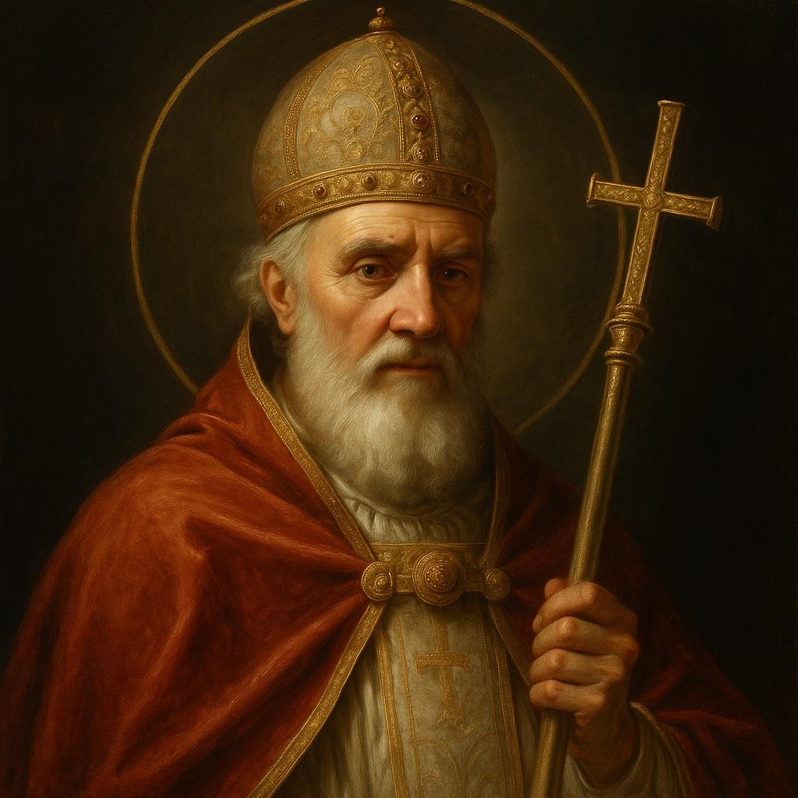
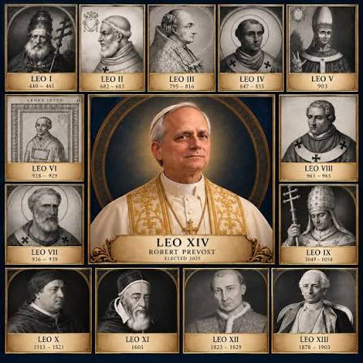
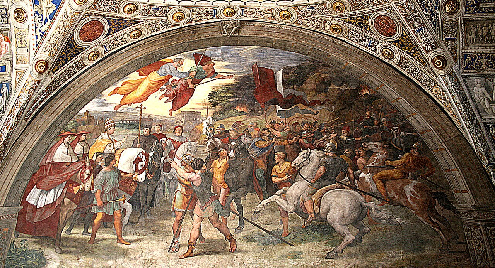
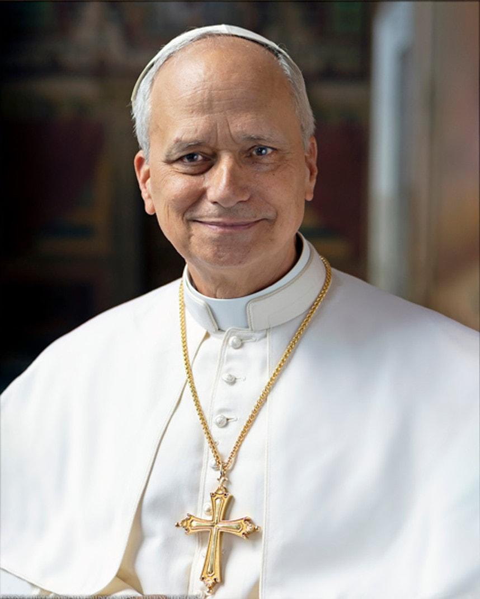

Who was Saint Leo the Great?
Pope Saint Leo the Great was Leo I—the very first pope to take the name Leo. He served from 440 to 461 AD and is traditionally counted as the 45th pope.
A shepherd and a teacher
Leo helped guide the Church through a time of political danger and theological disagreement. His famous Tome of Leo explained the Church's belief that Jesus Christ is fully divine and fully human.
Leo is honored as a Doctor of the Church for the importance of his teaching.
Why “the Great”?
He is remembered for courageous leadership, his defense of Christian teaching, and his encounter with Attila the Hun.
Leo I = First Pope Leo
The current pope, Leo XIV, is the fourteenth pope to use the name.


Attila the Hun and Pope Leo
Attila led the Huns, a formidable military power that threatened parts of the Roman Empire. In 452, he invaded northern Italy.
Attila's armies became feared across Europe for their military campaigns.
Attila invaded Italy. Pope Leo I joined an embassy that met with Attila near the River Mincio.
Attila withdrew from Italy. The meeting became one of the most famous episodes of Leo's papacy.
Why did Attila withdraw?
The exact reasons are uncertain. Historians consider several factors, including diplomacy, supply difficulties, disease, and pressure elsewhere on Attila's forces.
Important: It is historically supported that the meeting occurred; we cannot establish that Leo alone caused Attila's withdrawal.
Did Saints Peter and Paul appear?
According to a later Christian tradition, Attila saw Saint Peter and Saint Paul standing beside Pope Leo, appearing as heavenly protectors and warning him to turn back. Artists have portrayed this dramatic scene for centuries.
It is a meaningful part of Catholic tradition, but the supernatural appearance is not independently established as a historical fact. The tradition and the documented diplomatic encounter should be presented distinctly.

From Father Robert Prevost to Pope Leo XIV
Our current pope, Leo XIV, was once a teacher of mathematics and physics. Before his election in 2025, he was known as Robert Francis Prevost.

Leo XIV chose his papal name partly in tribute to Leo XIII, whose social teaching addressed challenges of the Industrial Revolution. Leo XIV has drawn a parallel with today's challenges, especially artificial intelligence.
Why learn math when AI can give us answers?
A calculator can compute. AI can suggest a solution. But education also teaches us how to reason, question, explain, and decide whether an answer makes sense.
1. Explain, don't just memorize
Leo I worked to explain difficult ideas clearly. In mathematics, understanding why a method works is more valuable than memorizing steps alone.
Example: Why does factoring a quadratic help us find its zeros?
2. Test your reasoning
History requires evidence; mathematics requires justification. A plausible answer is not necessarily a correct answer.
Example: How can you verify a solution by substitution or graphing?
3. Grow through difficulty
Making mistakes, trying new approaches, and explaining your reasoning are important parts of learning.
Example: What did your last incorrect answer teach you?
4. Use knowledge to serve
Mathematics supports engineering, medicine, architecture, technology, and countless acts of service.
Example: How might a mathematical model help protect or improve lives?
Try a quick example
Suppose a student writes x² − 5x + 6 = (x − 2)(x − 3). Is it enough to say, “The computer says it's right”?
Think first. Then discuss.
A prayer before learning
Lord God, source of all wisdom and truth,
Through the example of Saint Leo the Great, teach us to seek what is true, to speak with courage, and to listen with humility.
Bless our work in mathematics today. Give us patience when problems are difficult, honesty when we make mistakes, and understanding that goes deeper than simply finding the right answer.
Help us use the knowledge we gain to serve others, and bless our teachers, classmates, families, and all those who need our prayers.
Through Christ our Lord. Amen.
For further reading
Pope Leo XIV — Vatican website · Saint Leo the Great — Vatican News
Teacher's note: The historical details and traditional account are distinguished intentionally. The classroom gallery includes the supplied portraits and artwork.